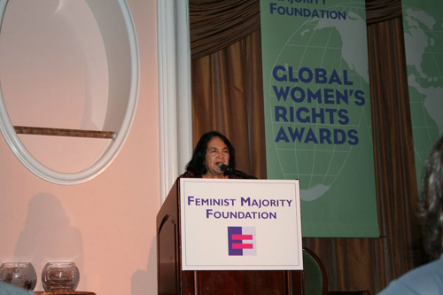
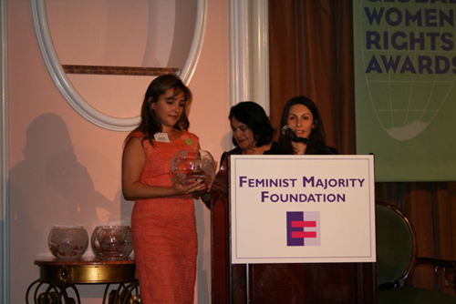
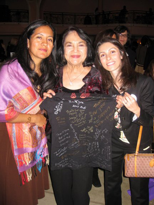

|
|
|
Browsing
Contact Us |
Campaigners |
Face to Face |
Tribune |
Interview |
News |
On the Web |
One Million |
Report
Farsi | Français | German | Italian | Spanish | العربية Also in this section
|

Feminist Majority Foundation presents an award to the One Million Signatures CampaignTuesday 5 May 2009 Campaign in California: The One Million Signatures Campaign has been recognized as the special winner of the Eleanor Roosevelt 2009 Global Women’s Rights Award, along with Christiane Amanpour, Billie Heller, Leymah Gbowee, Dr. Neal Baer, and Mariska Hargitay, who each have contributed part or all of their lives or careers to women’s rights issues. The awardees were honored on April 29 2009, at a gala dinner reception hosted by the Feminist Majority Foundation in the Beverly Hills Hotel, Los Angeles, California.
 While pointing out the innovative, peaceful and grassroots approach utilized by Campaign activists to raise awareness about the impact of discriminatory laws on the lives of women in Iran, and seeking reform of laws through the collection of signatures in support of a petition addressed to the Iranian Parliament, Dolores Huerta acknowledged that these peaceful activists had faced pressures in their efforts. Specifically, Mrs. Huerta pointed to the imprisonment of Alieh Eghdam Doust, women’s rights defender, and the recent detention of Campaign Member Maryam Malek and her subsequent release on April 29, 2009. Ms. Huerta also acknowledged that over 20 Campaign activists were present at the Awards ceremony and invited them to stand, a move that was followed by the applause of the crowd. Dolores Huerta then presented the 2009 Global Women’s Rights Award to the One Million Signatures Campaign. The Campaign was honored in special recognition of its ground-breaking work to demand an end to laws in Iran that discriminate against women.
 Roja Bandari and Yassmin Manauchehri, two Campaign members from California then joined Ms. Huerta on the stage to accept the award for this vibrant coalition of women’s rights activists. Roja Bandari thanked FMF for their support, expressed enthusiasm for continued cooperative efforts between FMF and the Campaign and praised campaign activists who are tirelessly working for gender equality. She added that the One Million Signatures Campaign has mobilized a large and diverse group of Iranians, based largely in Iran, but also in other countries where there is a large Iranian Diaspora; activists with different ideologies who work together around a set of specific demands. She then continued by saying: “The support of an independent civil society organization, an NGO like the Feminist Majority Foundation makes a difference, because it represents a support and solidarity that comes from an equal and a peer." Eleanor Smeal, President of the Feminist Majority Foundation (FMF) and a former President of the National Organization for Women (NOW), in her keynote speech wisely insisted that “Women’s rights are not western values rather they are universal values.” Mavis Leno, Jay Leno’s wife and the co-chair of the Afghanistan Campaign of the Feminist Majority Foundation, said that we cannot afford to keep out 70-80 percent of the people of the world out of the circle of influence over human affairs, based solely on their gender, race and ideology, and hesitate to give them a chance to contribute their God-given gifts to human beings. She concluded by saying; “No doubt that I am a feminist, but I am a humanist after all.” Jay Leno, the popular late night show host, after making humorous comments that brought the audience to much laughter, hosted an auction to benefit the Feminist Majority Foundation. Campaign volunteers collected the signatures of some dignitaries present such as Shohreh Aghdashlo, and some international supporters such as Marvis Leno, Billie Heller and Dolores Huerta. The audience and particularly Ms. Eleaneor Smeal and Ms. Billie Heller shared their best regards and showed interest in continued collaborative effort. Christiane Amanpour, Billie Heller, Leymah Gbowee, Dr. Neal Baer, and Mariska Hargitay were also honored at this event. Christiane Amanpour was recognized for bringing the world’s attention to the plight of women under the brutal Taliban regime as it rose to power in Afghanistan. After accepting the award and while sitting among the panel of individual award winners, she started her talk by congratulating her fellow Iranians on their accomplishments. Ms. Billie Heller received a special award for nearly three decades of work to win U.S. Senate ratification of the international Convention on the Elimination of All Forms of Discrimination Against Women (CEDAW). A copy of the “2009 Calendar of Iranian Women Who Dare” as well as a summary of events and accomplishments of the Campaign in 2009 was presented to Ms. Heller. She joyfully accepted these offerings of appreciation, signed the Campaign petition and held a short interview with the Campaign members. Ms. Heller was warmly supportive of Iranian women’s activists own efforts to promote CEDAW. Leymah Gbowee led an unprecedented mobilization of women from across Liberia in a series of massive demonstrations to end the bloody 14 year long civil war. A copy of the “2009 Calendar of Iranian Women Who Dare” as well as a summary of events and accomplishments of the Campaign in 2009 was presented to Ms. Gbowee. She accepted the present, signed the Campaign petition and provided much encouragement in her short interview with the Campaign members. Dr. Neal Baer and Mariska Hargitay brought a better understanding of violence against women to television audiences, including international human trafficking and child soldiers in war. Dolores C. Huerta, who presented the One Million Signatures Campaign award, is the co-founder and Secretary-Treasurer of the United Farm Workers of America, AFL-CIO ("UFW"). Dolores has played a major roll in the American civil rights movement. In 1963 she was instrumental in securing Aid For Dependent Families ("AFDC"), for the unemployed and underemployed, and disability insurance for farm workers in the State of California. As an advocate for farm worker rights Dolores has been arrested twenty-two times for non-violent peaceful union activities. In 1984 the California State Senate bestowed upon her the Outstanding Labor Leader Award. In 1993 Dolores was inducted into the National Women’s Hall of Fame. She is also the co-founder and president of the Dolores Huerta foundation. This internationally recognized foundation builds active communities working for fair and equal access to health care, housing, education, jobs, civic participation and economic resources for disadvantaged communities, with an emphasis on women and youth. Campaign members signed the back of a newly designed Campaign T-shirt and along with a copy of the “2009 Calendar of Iranian Women Who Dare”, presented these offerings of appreciation to Ms. Huerta and her daughter. She gracefully accepted the gift, signed the Campaign petition and held a short interview with the Campaign members.
 The One Million Signatures Campaign was established in summer 2006 and ever since has been seeking equal rights for women in Iran by demanding change in at least 10 discriminatory laws such as divorce, marriage, custody of children, right to travel, etc. The Campaign emphasizes a face to face approach designed to raise awareness among Iranian women and men. This cultural awareness is not only limited to Iranians living in Iran, but also targets those living outside, to promote gender equality. Through persistent activism, the Iranian women’s movement has been successful in persuading Iranian officials to review and change certain laws, such as the inheritance law which until recently only allowed women to inherit a portion of portable property and those non-portables that were standing, such as buildings, trees and such. However, the new legislation has added ground assets, such as land and other standing property that their husbands owned while alive. In addition, through a recently issued directive by the Judiciary, insurance companies are now obliged to pay equal compensation (deyeh) to men and women injured through car accidents. Prior to this directive, women received compensation for automobile accidents at half the rate of men. Despite their peaceful and civil approach many women’s rights activists, including Nobel Laureate Shirin Ebadi, have faced pressures, through arrests, harassment and intimidation. Despite these pressures Campaign activists contend that their activities are civic and legal and that they are committed to continuing with their efforts to raise awareness about gender discrimination and reform laws. In the past Campaign activists have faced vaguely worded security charges such as: “acting against national security” and “spreading propaganda against the state.” They are under persistent pressure and the form of these pressures varies from telephone calls harassing activists, to violent house searches, travel bans, insults to the activists and their family members, and imprisonment. It should be noted that Esha Momeni, a member of the One Million Signatures Campaign in California, and a CSUN graduate student, was arrested on October 15, 2008, during a visit to Iran with family and to complete her graduate thesis, which focused on conducting interviews with women’s rights activists. While being released on bail of nearly $200,000 on November 11, 2008. She still faces a travel ban and cannot leave Iran. In the most recent cases of pressure placed on the Campaign members, Maryam Malek was arrested on security charges, but was released on April 29 after 26 days in detention. Parastoo Alahyari, also a member of the Campaign was recently sentenced to a one year prison sentence in relation to her activities in the Campaign, but is appealing the ruling. Alieh Eghdamdoust, a women’s rights defender, was sentenced to prison for her participation in a peaceful protest in Hafte Tir Square in June 2006, demanding changes to discriminatory laws against women. She is currently in Evin Prison where she is serving her 3 year sentence, meanwhile other women’s rights defenders continue to press for her release and her lawyers have demanded a judicial review of the case. The Campaign has been successful in attracting international recognition for its activities and methods. In addition to the “2009 Global Women’s Rights Award,” in December 2008 the Campaign received the “Simon De Beauvoir” 2009 award, which was established in honor and memory of this French feminist theorist and writer. In November 2008, the website of Change for Equality, the site of the One Million Signatures Campaign, received the Reporters Without Borders Jury Prize of the Deutsche Welle International Weblog Award, The BOBS. The Feminist Majority Foundation, founded in 1987, is the United States’ largest feminist research and action organization dedicated to women’s equality, reproductive rights and health, and non-violence. The Feminist Majority Foundation was nominated for the Nobel Peace Prize in 2002 for its efforts to help the women and girls of Afghanistan reclaim their full rights. The Global Women’s Rights Award Ceremony occurs on an annual basis. The recipients are generally advocates of advancing women’s rights and increasing awareness of the injustices women face on account of their gender. These advocates challenge these goals often against great odds and at great personal risk. |